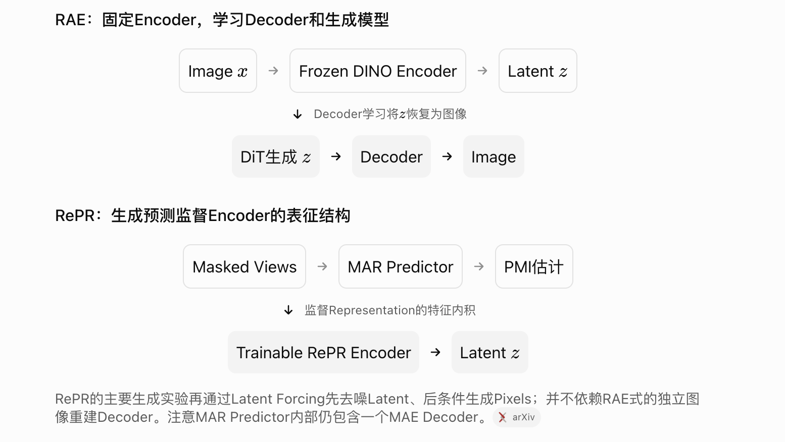

Research notebook · 研究笔记
RePR：用生成模型的预测增益学习视觉表征
论文：Generative Representation Learning for Scalable Latent Tokenization
注意和RAE的区别（Representation Autoencoder）这个主要是学习一个“生成”的能力

方法名称：RePR（Relative Prediction Representations）。本笔记依据提供的论文解读整理，实验数字沿用该材料，未独立复核原文。
RePR 关心的是视觉生成的一个基础问题：一个表征很适合识别图像，并不意味着它也很适合生成图像。能不能直接利用生成模型的预测能力，学习更适合生成任务的视觉表征？
它的思路是比较两种条件下的预测难度：只知道一部分上下文时，某个 patch 有多难预测；增加另一份信息后，预测又改善了多少。生成模型提供这个相对预测收益，表征模型则把它编码进特征之间的内积关系。
1. 为什么需要面向生成的表征
判别任务和生成任务对信息的要求不同。识别一张图像里是不是猫，可能不需要保留每根毛发、背景纹理和准确位置；要重新生成这张图像，这些信息却可能很重要。
这并不是说 DINO、JEPA 等方法只能学习类别信息，而是说它们的学习目标不直接保证特征容易被下游生成模型建模。判别表现、重建质量和生成适用性需要分开评估。
一个相关问题是 Feature Suppression（特征抑制）：当某种特征已经足够完成自监督目标时，模型可能不再学习其他仍有价值的因素。例如图像带有易于识别的水印时，模型可能优先利用水印区分样本。
RePR 希望让监督信号更多反映数据之间的预测关系，而不仅是能否区分正负样本。
2. PMI：知道一份信息，能帮助预测另一份信息多少
对两个视图
它比较“知道
例如看到猫的头部，通常可以帮助预测同一张图像中的身体结构。PMI 描述的是这种统计依赖，不只是两个视图是否属于同一类别。
从概念上，RePR 希望：
这样，特征几何就与数据的相对可预测性联系起来。可以把它理解为用有限维表示近似 PMI 结构，而不是保证任意数据分布的 PMI 都能被共享特征内积精确表示。
还要注意，逐点 PMI 可以为负：对某个具体样本，增加条件未必让它的预测概率上升。不要把每个样本的“信息收益”都理解成非负值。
3. 用去噪误差差值估计相对预测收益
直接计算高维图像的概率比很困难。RePR 利用生成模型，把它转化为两种条件下的去噪误差比较。
设
如果额外上下文
其中
这一步利用了扩散去噪目标与似然估计之间的联系。实际得到的是有限生成模型、时间权重和采样近似共同决定的信息信号，不能简单把一次去噪误差下降当成精确的 PMI。
实现中，两种条件共享噪声，以减少差值估计的方差；提供的解读记载使用了 32 次 Monte Carlo 采样。
4. 实际优化的是新增 patch 带来的表征变化
RePR 并不直接估计两个完整高维视图的全部 PMI，而是考察：在视图
表征侧的变化为：
这里的并集表示增加一个可见 patch，不是对图像做数值相加。再把这个变化与
总体目标写成：
因此，生成模型负责提供“额外上下文究竟帮助了多少”的监督，表征模型负责学习对应的特征结构。
5. 为什么增量预测和迭代训练重要
把完整 PMI 拆成 patch 级增量
对由多个 patch 组成的视图
每项只需比较同一个 patch 在两种上下文下的预测。这给增量监督提供了依据，也避免每次都直接估计整个高维视图的联合信息量。实际采用近似预测器时，逐项估计仍然可能有误差。
从像素预测转向特征预测
第一轮训练预测像素 patch；下一轮使用上一轮 encoder 提取的特征作为预测目标。这样，预测任务可以从像素空间逐渐转向学到的表征空间。
这与其他自举式表征学习方法有相似之处，但 RePR 的重点是比较预测收益，并用这个收益约束表示关系，而不只是让一个网络回归另一个网络的特征。
材料还提到相对位置 query 和空间等变设计：不直接把绝对位置输入共享 encoder，而通过相对位置查询得到空间 patch 特征。这是服务于视觉生成的结构设计。
6. 实验支持了哪些结论
特征抑制：在水印捷径存在时能否保留图像内容
作者在 ImageNet 的 patch 中加入可唯一标识图像的水印。这样，模型可能仅凭水印就完成部分自监督学习目标。
在这个设置下，DINOv3、LeJEPA 的类别探测表现明显退化，而 RePR 仍能学到包含类别信息的特征。这支持相对预测目标对该类捷径具有抵抗能力，但不能推导出 RePR 在所有自然数据上都不会发生特征抑制。
Scaling：更大的训练投入能否改善下游生成
作者把 encoder 从约 20M 扩展到 306M 参数，并控制下游生成模型的规模和训练时长。结果显示，增加 encoder 训练 FLOPs 后，下游生成质量呈现近似幂律改善；第二轮特征预测也优于第一轮像素预测。
材料中的一个 ImageNet 配置对比是：173M encoder 在第一轮得到 FID-10K 30.68，第二轮配置达到 24.73。但两者训练组成和计算成本并不完全相同，不能把差值全部归因于预测目标切换。
论文中约 7–8 倍的效率数字来自曲线外推：
| 数据集与参照 | 估计达到相应生成指标所需的 encoder 训练计算量 |
|---|---|
| ImageNet，对比 DINOv2 | 约为参照的 |
| GPIC，对比 WebSSL | 约为参照的 |
这是 scaling law 外推结果，不是实测端到端训练或推理提速 7–8 倍。材料还指出，ImageNet 上最大模型在约 200 epochs 后出现过拟合迹象，因而外推边界需要重视。
把 tokenizer 预训练成本也算进去
另一个重要实验把 encoder 的预训练 FLOPs 纳入总成本：
| ImageNet-256 配置 | FID-50K ↓ | 总训练 FLOPs |
|---|---|---|
| 直接像素 JiT-L，600 epochs | 2.36 | |
| RePR-78M + JiT-L，440 epochs | 2.18 |
在这组配置中，RePR 的总训练计算量略低，生成质量更好。它支持的结论是：给表征学习分配一部分训练预算，可以减少后续生成建模的负担。
这里使用的 Latent Forcing 包含潜空间去噪和以 latent 为条件的像素生成，不能直接等同于传统 VAE encoder–decoder 流程。材料中另一个 RAE 设置的 FID-50K 为 11.13，那是不同的实验协议，不能和这里的 2.18 直接比较。
7. 这篇工作的价值与边界
RePR 提供了一条比较清楚的路线：
额外上下文的预测收益 → 近似信息量 → 表征几何 → 下游生成建模。
它把“表征好不好”的判断推进到生成用途：除了保留语义和支持重建，还要看后续模型能否高效学习这个表征的分布。这里的 diffusability 应结合具体下游模型和评测设置理解，不能当成完全独立于模型的单一性质。
仍需区分三个问题：
- 监督是否准确？ 有限生成模型可能把自身预测偏差传给表示，时间权重和 Monte Carlo 近似也会影响信号。
- 计算投入是否划算？ 当前结果支持所评估图像生成配置下的预算分配，不代表所有任务都需要 tokenizer，也不等于推理速度同步提升。
- 生成友好是否等于控制友好？ 图像可生成性不直接保证动作相关动力学、接触状态或长期预测一致性。
8. 对 World Model 和机器人表征的启发
下面是基于相对预测思想的研究延伸，不是论文已经验证的机器人方法。
给定观测历史
它比较动作条件对未来预测提供的额外信息。由此可以尝试让表征更关注受动作影响、对控制有意义的动态结构。
但这个概率比首先反映统计预测关系，不自动等于动作的因果作用。离线数据中的动作可能与场景、任务和隐藏状态相关；如果历史已经能几乎确定动作，额外加入动作的信息增益也可能很小，即使动作在物理上十分重要。
因此，将 RePR 推广到动作条件世界模型时，还需要检查不同动作下的未来区分能力、接触状态预测以及真实闭环控制收益。图像生成 FID 可以说明表示适合某类生成任务，最终能否帮助机器人做出更好的动作，仍要单独验证。